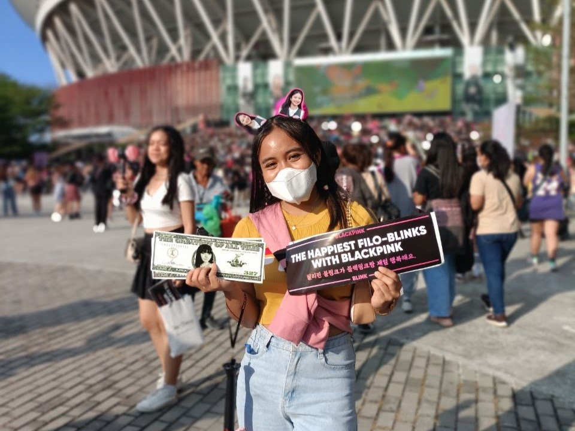
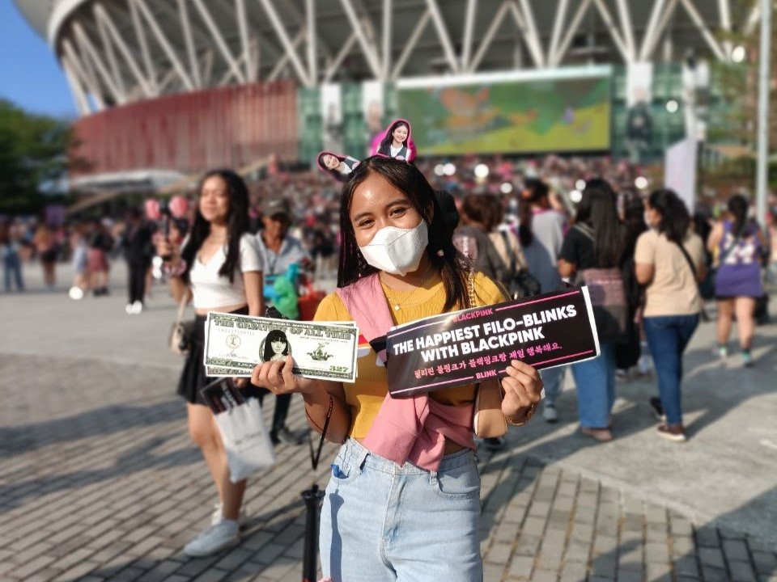

Home and Heart
My family means the world to me, and everything I'm doing right now is for them.
Success isn't merely a dream but a tangible goal; I want to give my parents a life they never thought possible.
I also have a younger brother, three years apart from me. We argue sometimes, like all siblings do, but he's also my go-to person like a human diary.
When we team up, I feel like there's nothing we can't do. We're like Mabel and Dipper from Gravity Falls.
He's the best, and I wouldn't ask for anything more.
If there's such a thing as reincarnation, I would willingly embrace any path that will lead me back to them.

 
